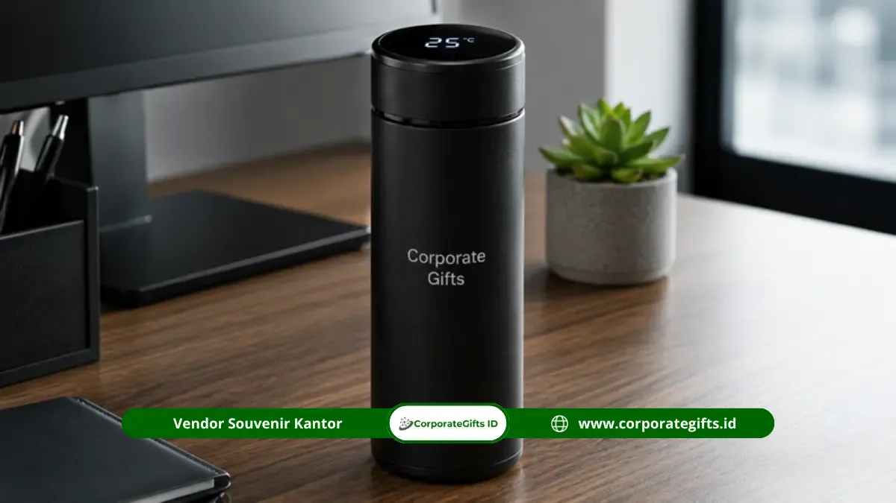

Corporate Gifts ID - Corporate gift terbaik untuk instansi di Bengkulu ada lima kategori, yaitu smart digital tumbler custom stainless, buku agenda kulit dengan metal pen, executive gift set berisi TWS earbuds, paket hampers perkantoran dengan tote bag canvas, dan powerbank custom berkapasitas tinggi. Kelima produk ini dipilih karena fungsinya jelas dipakai setiap hari, mudah dikustomisasi dengan logo instansi, dan tersedia lengkap melalui katalog Corporate Gifts.
Setiap kategori dapat disesuaikan dari sisi material, warna, dan jumlah pemesanan sesuai kebutuhan acara instansi. Produk yang dipilih idealnya mendukung aktivitas kerja harian, bukan sekadar seremonial, agar brand recall instansi bertahan lebih lama di mata penerima.
Poin Kunci Corporate Gift Bengkulu:
- Lima Kategori Unggulan: Smart tumbler custom, buku agenda dan metal pen, executive gift set TWS, hampers kantor tote bag canvas, dan powerbank custom.
- Fleksibilitas Desain: Setiap kategori dapat disesuaikan dari sisi material, warna, dan jumlah pemesanan sesuai kebutuhan acara instansi.
- Kegunaan Harian Nyata: Produk yang dipilih idealnya mendukung aktivitas kerja harian, bukan sekadar seremonial, agar brand recall bertahan lebih lama.
- Akses Katalog Terpusat: Seluruh kategori tersedia lengkap melalui katalog corporategifts.id untuk kebutuhan instansi di wilayah Bengkulu.
Pentingnya Apresiasi Eksklusif Melalui Corporate Gift
Corporate gift bukan sekadar barang tambahan dalam sebuah acara, melainkan representasi cara instansi menghargai relasi kerja jangka panjang.
Sebuah gift set souvenir kantor yang dipilih dengan cermat mampu memperkuat kesan profesional sekaligus menjaga nama baik instansi di mata klien, mitra kerja, maupun karyawan sendiri.
Nilai sebuah corporate gift juga ditentukan oleh konsistensi kualitas, bukan semata harga. Produk yang tahan lama dan tetap terlihat rapi setelah dipakai berulang kali akan terus mengingatkan penerima pada instansi pemberinya, jauh lebih efektif dibandingkan barang yang cepat rusak meski tampilan awalnya menarik.
Faktor kustomisasi turut menentukan keberhasilan sebuah corporate gift. Logo, warna korporat, dan pesan singkat yang dicetak secara presisi pada produk akan membuat merchandise perusahaan terasa personal, bukan sekadar barang massal yang dibagikan tanpa makna.
Bagi instansi yang melayani wilayah Bengkulu, faktor pengiriman dan kesiapan stok turut menjadi pertimbangan penting. Produk yang tersedia dalam katalog terpusat memudahkan tim procurement memesan dalam jumlah besar sekaligus memastikan waktu produksi dan pengiriman sesuai dengan jadwal acara yang telah ditetapkan sebelumnya.

Koleksi gift set eksklusif, smart digital tumbler, dan buku agenda kulit premium siap kirim untuk kebutuhan instansi Bengkulu.
Matriks Perbandingan 5 Pilihan Corporate Gift
Berikut rangkuman perbandingan fungsi dan rekomendasi peruntukan 5 kategori produk yang paling sering dipilih instansi di Bengkulu untuk kebutuhan corporate gift:
| Produk | Fungsi Utama | Cocok Untuk |
|---|---|---|
| Smart Digital Tumbler Custom Stainless | Menjaga minuman tetap praktis dibawa sehari-hari dengan display suhu LED | Rapat kerja tahunan, suvenir tamu undangan VIP |
| Buku Agenda Kulit & Metal Pen | Mencatat agenda kerja secara formal dengan tampilan mewah | Gift set pimpinan, tamu kehormatan, mitra strategis |
| Executive Gift Set dengan TWS Earbuds | Mendukung mobilitas kerja modern dan panggilan konferensi virtual | Apresiasi klien VIP, mitra bisnis level tinggi |
| Paket Hampers Perkantoran + Tote Bag Canvas | Menyediakan kebutuhan kerja dalam satu paket terpadu yang eco-friendly | Seminar internal, pelatihan karyawan, kunjungan kerja |
| Powerbank Custom Berkapasitas Tinggi | Menjaga daya perangkat elektronik saat mobilitas tinggi | Perjalanan dinas luar kota, kegiatan luar kantor |
5 Pilihan Corporate Gift untuk Instansi Bengkulu
Berikut pembahasan lengkap lima kategori produk unggulan yang tersedia di katalog resmi Corporate Gifts:
1. Smart Digital Tumbler dan Custom Stainless Steel
Smart digital tumbler menjadi pilihan populer karena menggabungkan fungsi harian dengan tampilan modern berkat indikator temperatur digital pada tutupnya. Material stainless steel SUS 304 food-grade membuat tumbler tetap awet dipakai bertahun-tahun, sementara area cetak yang luas memungkinkan logo instansi tampil jelas tanpa mengganggu estetika produk.
Produk ini cocok dibagikan pada acara internal seperti rapat kerja tahunan maupun sebagai souvenir untuk tamu undangan resmi. Fungsinya yang dipakai setiap hari membuat brand recall terhadap instansi pemberi berlangsung lebih lama dibandingkan merchandise sekali pakai.
Variasi kapasitas dan warna pada smart digital tumbler juga memudahkan instansi menyesuaikan produk dengan identitas visual masing-masing, sehingga tetap terlihat konsisten meski dibagikan kepada penerima dari berbagai level jabatan dalam satu acara yang sama.
2. Buku Agenda Kulit dan Metal Pen Berkelas
Pasangan buku agenda berbahan kulit sintetis PU dan pulpen metal selalu relevan untuk kalangan profesional, terutama bagi instansi yang ingin menonjolkan kesan formal dan berkelas. Buku agenda memberi ruang bagi penerima untuk mencatat agenda kerja, sementara metal pen menambah kesan eksklusif saat digunakan dalam pertemuan resmi.
Kombinasi ini sering dipilih untuk gift set jajaran pimpinan, tamu kehormatan, atau mitra kerja strategis karena kesannya yang tidak berlebihan namun tetap terasa premium.
Selain fungsinya, tampilan kemasan buku agenda dan metal pen juga berperan besar dalam membangun kesan pertama. Kemasan yang rapi dan seragam antar unit memudahkan instansi menjaga standar kualitas ketika gift set ini dibagikan dalam jumlah banyak pada satu momen resmi.
3. Executive Gift Set dengan TWS Earbuds
Executive gift set yang menyertakan TWS earbuds menyasar kebutuhan merchandise dengan nilai fungsional tinggi di era kerja hybrid. Earbuds nirkabel mendukung mobilitas kerja modern, sehingga penerima merasakan manfaat langsung dari gift yang diberikan, bukan sekadar simbol seremonial.
Set ini biasanya dikemas dalam satu paket rapi bersama aksesori pendukung lain dalam hardbox eksklusif, menjadikannya pilihan tepat untuk apresiasi kepada klien VIP atau mitra bisnis dengan level kerja sama tinggi.
Karena posisinya sebagai gift premium, executive set dengan TWS earbuds juga memerlukan perhatian lebih pada detail kemasan, mulai dari kotak presentasi hingga penempatan logo instansi, agar kesan eksklusif terasa sejak gift set pertama kali diterima oleh penerimanya.
4. Paket Hampers Perkantoran Lengkap dengan Tote Bag Canvas
Paket hampers perkantoran biasanya berisi kombinasi barang fungsional seperti tote bag canvas, alat tulis, blocknote, dan aksesori kerja lain dalam satu kemasan terpadu. Tote bag canvas sendiri populer karena tahan lama, ramah lingkungan, dan mudah dibawa dalam aktivitas kerja sehari-hari.
Paket seperti ini cocok untuk kebutuhan acara berskala besar, misalnya seminar internal, pelatihan karyawan, atau kunjungan kerja lintas instansi, karena memudahkan pengadaan dalam jumlah banyak dengan tampilan yang seragam.
Fleksibilitas isi paket hampers juga memudahkan instansi menyesuaikan komponen sesuai kebutuhan acara, misalnya menambah alat tulis untuk kegiatan pelatihan atau menyesuaikan jumlah unit dengan estimasi peserta yang hadir pada hari pelaksanaan.
5. Powerbank Custom Berkapasitas Tinggi
Powerbank custom berkapasitas tinggi menjawab kebutuhan mobilitas kerja yang semakin bergantung pada perangkat elektronik smartphone dan tablet. Produk ini praktis dibawa saat perjalanan dinas maupun kegiatan luar kantor, menjadikannya merchandise yang benar-benar terpakai, bukan hanya disimpan.
Bagi instansi, powerbank custom juga menawarkan area branding yang cukup luas untuk mencetak logo secara jelas melalui teknik print UV beresolusi tinggi, sehingga tetap efektif sebagai media pengenalan identitas instansi kepada penerimanya.
Ketahanan baterai dan kecepatan pengisian daya menjadi dua aspek yang paling diperhatikan penerima ketika menilai kualitas sebuah powerbank custom. Produk dengan performa yang konsisten akan terus dipakai dalam jangka panjang, sehingga logo instansi yang tercetak di permukaannya tetap terlihat berulang kali dalam berbagai situasi kerja.
Cek Katalog Corporate Gifts ID untuk Kebutuhan Instansi Anda
Kelima pilihan di atas hanyalah sebagian dari kategori corporate gift yang tersedia untuk melayani kebutuhan instansi di Bengkulu. Setiap kategori dapat disesuaikan dari sisi material, warna, hingga jumlah pemesanan sesuai kebutuhan acara maupun anggaran instansi Anda.
Proses pemilihan corporate gift idealnya dilakukan jauh sebelum tanggal acara, agar tim produksi memiliki waktu yang cukup untuk mengerjakan kustomisasi logo dan kemasan sesuai standar instansi. Perencanaan yang matang juga membantu instansi mendapatkan jadwal produksi yang lebih fleksibel dan pengiriman ekspedisi logistik yang aman ke Bengkulu.
Tim procurement dan General Affairs yang ingin melihat variasi produk secara lengkap dapat mengecek Katalog Resmi Corporate Gifts untuk membandingkan spesifikasi dan opsi kustomisasi yang tersedia sebelum menentukan pilihan akhir.